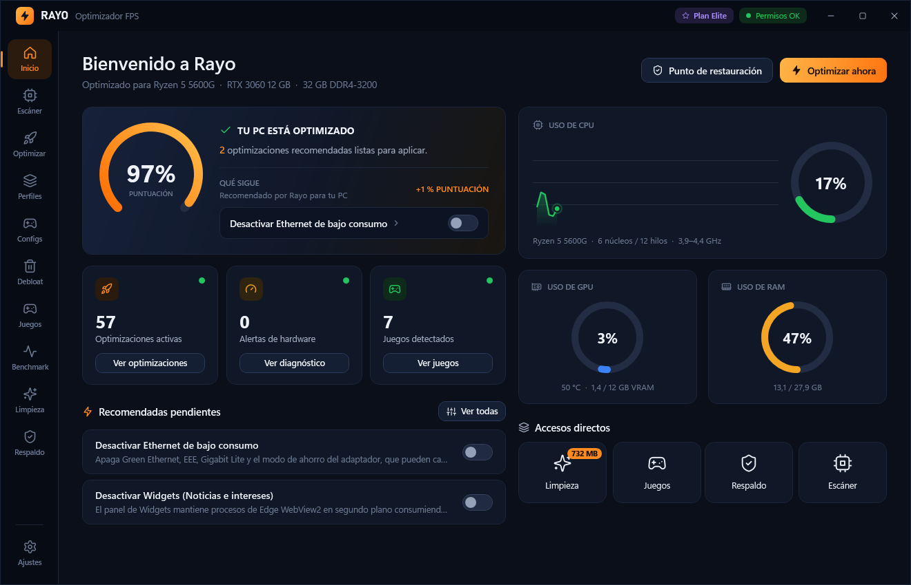

Gratis para empezarElite gratis 3 díasTodo se puede revertir

73optimizaciones de sistema
34apps para quitar
100%reversible con respaldo
18juegos con Config
Funciones
Todo lo que necesitas para exprimir tu PC
El escáner detecta tu hardware real (AMD, Intel, NVIDIA, Radeon, escritorio o portátil) y Rayo adapta cada recomendación a tu PC.
Escáner de PC
Detecta CPU, GPU (VRAM real, PCIe, Resizable BAR, driver), RAM (canales, XMP), discos, placa, pantallas (Hz actual y máximo), red y sistema. Incluye un diagnóstico con botones para corregir y una guía de BIOS con la ruta exacta en MSI, ASUS, Gigabyte o ASRock.
Optimizaciones de sistema
54 ajustes de FPS, latencia, GPU, energía, registro, red, entrada y disco, más 19 de privacidad y servicios. Cada una indica su riesgo (Seguro / Moderado / Avanzado). Perfiles listos: Recomendado, Competitivo, Streaming y Portátil.
Debloat
34 apps preinstaladas para desinstalar con selección múltiple, 5 ajustes de servicios y 14 de privacidad y telemetría: Copilot, Recall, Widgets, anuncios, Cortana y más.
Juegos
Detecta juegos de Steam, Epic y Riot. Por juego: GPU dedicada, prioridad de CPU alta y pantalla completa real. Modo Juego, overlay con FPS, 1 % low, temperaturas y ping, y perfiles de Fortnite con copia para restaurar. Benchmark con FPS reales.
Limpieza
Temporales, cachés de sombreadores DirectX/NVIDIA, descargas de Windows Update, volcados, DNS, memoria en espera y TRIM. Además cierra las apps que gastan RAM antes de jugar, sin tocar procesos de Windows, drivers, antivirus ni tus juegos.
Respaldo y seguridad
Punto de restauración automático, valor original guardado por cada cambio, «Revertir» uno o todos, y modo simulación que muestra lo que haría sin tocar nada.
Las 54 optimizaciones por categoría
Más 14 de privacidad y 5 de servicios en Debloat: 73 en total. El detalle de cada una (clave de registro, servicio, ajuste de NVIDIA o comando exacto) está en OPTIMIZACIONES.md.
FPS y Latencia 8Modo Juego, HAGS, Game Bar, pantalla completa, temporizador
CPU y Energía 8Máximo rendimiento, núcleos sin aparcar, USB y PCIe sin ahorro
Registro 9MMCSS, prioridad de primer plano, menús y apagado más rápidos
Red y Ping 6Nagle, limitación multimedia, Ethernet sin ahorro, DNS Cloudflare
Mouse y Teclado 3Sin aceleración, sin Teclas especiales, repetición rápida
Memoria y Disco 6Kernel en RAM, svchost, TRIM, NTFS sin último acceso
Calidad de vida 5Extensiones visibles, menú clásico, Finalizar tarea, Este equipo
Configs por juego
Optimizado para tu juego
Cada Config aplica las optimizaciones de Windows que sirven para ese tipo de juego, ajusta su ejecutable (GPU dedicada, prioridad y pantalla completa real) y te deja la guía de ajustes dentro del juego. En Fortnite, Rayo también cambia los ajustes del juego por ti. Se agregan juegos nuevos sin actualizar Rayo.
FortniteValorantCounter-Strike 2Call of Duty / WarzoneApex LegendsRainbow Six SiegeOverwatch 2Marvel RivalsPUBGFree Fire (emulador)League of LegendsDota 2MinecraftRobloxGTA VEA Sports FCRocket LeagueThe Finals · nuevo
¿Falta tu juego? Pídelo por Discord a @sebaile y aparecerá en Rayo la próxima vez que lo abras.
Planes
Empieza gratis. Paga una sola vez.
Prueba Elite gratis durante 3 días desde Rayo → Ajustes. Revertir cambios y los puntos de restauración son siempre gratis.
¿Cómo comprar? Escríbeme por Discord a @sebaile con el plan que quieres. Al confirmar el pago te envío tu clave y la activas en Rayo → Ajustes → Activar clave. Devolución dentro de 10 días si Rayo no funciona en tu PC (ver Términos de uso).
Capturas
Así se ve Rayo
Capturas reales de la aplicación. Toca una imagen para verla en grande.
Respaldo y seguridad
Tu PC siempre puede volver atrás
Lo que Rayo hace por ti
Respaldo por cambio: antes de tocar algo guarda el valor original y, al revertir, lo restaura exactamente.
Punto de restauración automático antes del primer cambio (como máximo uno al día).
Modo simulación: solo registra lo que haría, sin tocar nada.
Riesgo visible: las avanzadas piden confirmación y quedan fuera de los perfiles automáticos.
BitLocker: se suspende durante el reinicio si cambias el arranque, para que no pida la clave.
Lo que Rayo NO hace
No desactiva Windows Defender.
No desactiva el Control de cuentas de usuario (UAC).
No desactiva Windows Update.
No quita las mitigaciones Spectre/Meltdown.
No aplica «tweaks» que son mitos sin efecto medible.
Ojo: desinstalar apps no se revierte automáticamente; se reinstalan desde Microsoft Store.
El ZIP trae Rayo.exe (sin instalar), LEEME.txt, TERMINOS.txt y OPTIMIZACIONES.md. Rayo se actualiza solo con un clic.
Descarga y descomprime el ZIP, o ejecuta el instalador (sin permisos de administrador).
Abre Rayo y acepta el permiso de administrador. Si lo rechazas, funciona en modo de solo lectura.
Revisa Inicio y Escáner y pulsa «Optimizar ahora» para aplicar el perfil Recomendado.
Reinicia cuando Rayo te lo indique.
¿Windows muestra «Windows protegió su PC»? Es normal: Rayo aún no está firmado digitalmente. Pulsa «Más información» y luego «Ejecutar de todas formas».
Sí. Rayo crea un punto de restauración, guarda el valor original de cada cambio y tiene un botón «Revertir» por optimización o para todas. Además puedes usar el modo simulación para ver qué haría antes de aplicar nada.
¿Por qué SmartScreen me advierte?
Porque el programa no está firmado digitalmente (la firma es de pago). Pulsa «Más información» → «Ejecutar de todas formas». Puedes comprobar que el archivo es el original con el hash SHA-256 de esta página.
¿Funciona con mi PC?
Sí, con cualquier PC con Windows 10 u 11 de 64 bits. El escáner detecta tu hardware real (AMD, Intel, NVIDIA o Radeon) y las recomendaciones se adaptan. Hay perfil Portátil y ajuste para Radeon (ULPS).
¿Me pueden banear por usar Rayo?
Rayo no se inyecta en los juegos ni toca sus anticheats (Vanguard, Easy Anti-Cheat, BattlEye, Ricochet…): solo cambia ajustes de Windows y del archivo de configuración de Fortnite, lo mismo que harías tú a mano.
¿Desactiva Windows Defender o Windows Update?
No. Tampoco el UAC ni las mitigaciones Spectre/Meltdown. Rayo evita a propósito esos ajustes y los «tweaks» que son mitos sin efecto medible.
¿Por qué pide permisos de administrador?
Para cambiar claves de registro, servicios y energía. Si no los das, Rayo abre en modo de solo lectura y el escáner funciona igual.
¿Cuánto cuesta?
El plan Gratis no cuesta nada. Pro vale $3.990 CLP y Elite $6.990 CLP, en un solo pago y con las actualizaciones incluidas. Puedes probar Elite gratis 3 días desde Rayo → Ajustes. Revertir cambios siempre es gratis.
¿Cómo compro y activo mi plan?
Escríbeme por Discord a @sebaile. Al confirmar el pago te envío tu clave (empieza por RAYO-) y la pegas en Rayo → Ajustes → Activar clave. La clave es personal y sirve en hasta 2 PC tuyos.
¿Y si no me funciona?
Tienes 10 días para pedir la devolución si Rayo no funciona en tu PC y el soporte no lo resuelve. Detalles en los Términos de uso.
¿Dónde veo qué hace cada optimización?
En OPTIMIZACIONES.md: el catálogo completo con la clave de registro, servicio o comando exacto de cada cambio, su riesgo y si requiere reinicio.